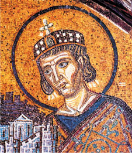

Os cristãos peneram durante todo o império, até que, resistindo aos martios, se tornaram, diante do imperador Constantino, dignios de obterem a liberdade de culto. Em 313 Constantino publica o Edito de Milão, reconhecendo o Cristianismo como uma religião do Império e concedento a liberdade religiosa aos cristãos. Podendo a Igreja possuir bens e receber donativos.
